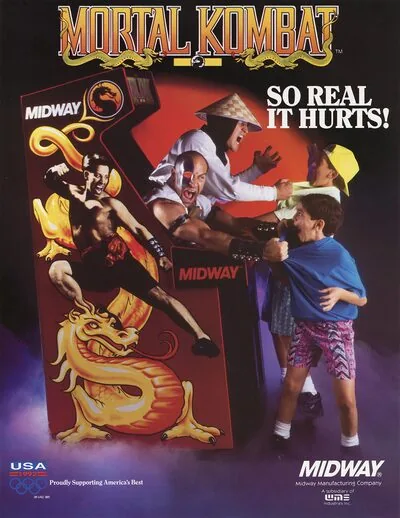

FBA (FinalBurn Alpha)
Mortal Kombat
- Año: 1992
- Desarrollador: Midway
- Género: Lucha / Uno contra uno
- Jugadores: 2 jugadores
- A dos: uno contra otro, a la vez
Torneo de lucha uno contra uno con actores digitalizados: siete luchadores se enfrentan en la isla del hechicero Shang Tsung para salvar la Tierra. Famoso por su violencia y por los Fatality, los remates del final de cada combate.
Controles
Probado en la bartop (2026-11-19): con FinalBurn Neo arranca y va bien; los botones, como en la tabla, con los golpes de cerca que vio el usuario. Disposición como la de Mortal Kombat 3, usando la fila de abajo, para los dos jugadores:
| Panel | Juego |
|---|---|
 | Dar un puñetazo bajo · de cerca: agarrar al rival y lanzarlo por encima con una voltereta |
 | Dar una patada baja · de cerca: dar un rodillazo |
 | Bloquear |
 | Dar un puñetazo alto · de cerca: dar un golpe corto (cabezazo, codazo…, según el personaje) |
 | Dar una patada alta |
 | Bloquear |
  | Empezar |
 | Meter una moneda |
+  | Salir del juego |
El panel en FBA (FinalBurn Alpha)

Argumento
Recopilado de internet (2026-11-03). Lo marcado con ⚠️ no está probado en la bartop.
Hace 500 años, el hechicero Shang Tsung fue desterrado a la Tierra y, con ayuda del monstruoso Goro, se hizo con el torneo Mortal Kombat. Goro lleva nueve torneos sin perder; si gana el décimo, Shao Kahn, emperador del Mundo Exterior, podrá apoderarse de la Tierra. Una nueva generación de luchadores acude a impedirlo. El torneo se celebra en la isla de Shang Tsung, y siete lugares de la isla son los escenarios.
Luchadores
| Luchador | Quién es |
|---|---|
| Liu Kang | Monje shaolín de la Orden del Loto Blanco, la del Gran Kung Lao, al que Goro venció hace siglos; representa a los shaolín |
| Sonya Blade | Teniente de las Fuerzas Especiales de EE. UU.; entra en el torneo sin querer, persiguiendo a Kano para arrestarlo |
| Johnny Cage | Actor de Hollywood que quiere demostrar que sabe luchar |
| Kano | Criminal, mercenario y contrabandista, jefe del Dragón Negro, una de las bandas más peligrosas del mundo |
| Raiden | Dios del Trueno; acepta la invitación de Shang Tsung |
| Sub-Zero | Ninja del clan Lin Kuei; domina el frío. Se cree que lo han contratado para matar a Shang Tsung |
| Scorpion | Espectro ninja, antiguo miembro del clan Shirai Ryu; quiere vengar su muerte y la de su familia y su clan a manos de Sub-Zero |
Jefes:
- Goro (subjefe): príncipe de los Shokan, temible raza de guerreros de cuatro brazos del Mundo Exterior. Invicto desde hace 500 años, cuando venció al Gran Kung Lao.
- Shang Tsung (jefe final): hechicero al servicio del Mundo Exterior; absorbe el alma de los guerreros que vence y se transforma en ellos para usar sus habilidades.
Secreto: Reptile, guardaespaldas de Shang Tsung y último superviviente de la raza saurio, del Mundo Exterior. Usa los poderes de Sub-Zero y de Scorpion (ver «Trucos y secretos»).
Final: según la historia oficial, Liu Kang, guiado por Raiden, vence a Goro y a Shang Tsung y libera las almas que este había encerrado. Cada luchador tiene su propio final.
Fuentes
Jugabilidad
Recopilado de internet (2026-11-03). Lo marcado con ⚠️ no está probado en la bartop.
- Tipo de juego: lucha 1 contra 1 de Midway (1992), con personajes digitalizados de actores reales.
- Cinco botones: puñetazo alto y bajo, patada alta y baja, y bloquear.
- Combates: gana quien gane dos rondas; si se acaba el tiempo, gana quien tenga más vida. Al final sale «Finish him!» para rematar con un Fatality.
- Mando de la recreativa: palanca de 8 direcciones y cinco botones en forma de X: puñetazos y patadas altos y bajos en las esquinas y bloquear en el centro.
- Golpes para todos: a diferencia de otros juegos de lucha, los luchadores apenas se diferencian en velocidad, tamaño, fuerza o salto. Todos comparten golpes que dependen de la distancia al rival y de la dirección de la palanca, como el barrido o el gancho (este lanza al rival por los aires y quita mucha vida).
- Especiales: casi todos se hacen empujando rápido la palanca hacia una dirección y pulsando un botón, sin apenas giros. «Desde el principio, una de las cosas que nos diferenciaba eran los movimientos locos, como las bolas de fuego y la magia» (Ed Boon, codiseñador).
- Bloquear: al bloquear se pierde algo de vida, pero muy poca agachado, y deja contraatacar de cerca. También estrenó los juggles: seguir pegando al rival en el aire.
- Un jugador: los siete luchadores, uno de ellos contra un doble de ti (mirror match), tres combates de resistencia (dos rivales seguidos sin recuperar vida), Goro y Shang Tsung.
- Dos jugadores: el J2 puede entrar en cualquier momento; si gana, sigue la partida del J1 desde donde iba.
- Remates (Fatality): al ganar se puede rematar al rival con un movimiento especial.
- Prueba tu fuerza (Test Your Might): entre combates, romper bloques machacando botones para llenar un medidor: madera, piedra, acero, rubí y diamante (los dos últimos, solo a dos jugadores). Cuanto más duro el material, más hay que llenar y más puntos da. Se puede jugar a dos a la vez.
Glosario del torneo
| Término | Qué es |
|---|---|
| Finish him / her («acábalo, acábala») | Al ganar el combate, momento para rematar al rival |
| Fatality | Remate final, sangriento; cada luchador tiene el suyo |
| Stage Fatality | Remate con el escenario (en El Foso, tirar al rival) |
| Flawless Victory | Ganar una ronda sin recibir daño |
| Double Flawless | Ganar las dos rondas sin recibir daño (en MK3 ya no existe) |
| Mirror Match | Combate contra tu propio luchador |
| Endurance (resistencia) | Dos rivales seguidos sin recuperar vida |
| Puntos | Se ganan con cada golpe y con los Fatality |
| Sangre | Salta con cada golpe que entra. En la versión de Super Nintendo era polvo gris; en la de Mega Drive se ponía con un código |
| Pantalla de presentación | La introducción; con un código se podía cambiar |
Fuentes
Guía de niveles
Recopilado de internet (2026-11-03). Lo marcado con ⚠️ no está probado en la bartop.
Se lucha contra los demás luchadores, luego un combate contra uno mismo, tres combates de resistencia (dos rivales seguidos), Goro y Shang Tsung.
Escenarios:
- El Patio (The Courtyard): dentro del palacio de Shang Tsung, con dos samuráis a los lados, monjes shaolín mirando desde los escalones, el dragón de piedra y Shang Tsung en su trono.
- Las Puertas del Palacio (Palace Gates): camino de piedra con portones chinos de madera, estatuas budistas, un Buda gigante y una montaña al fondo.
- El Santuario del Guerrero (Warrior Shrine): templo en ruinas bajo la luna llena, con estatuas de los luchadores y la de Goro en el centro.
- El Foso (The Pit): puente agrietado sobre pilares de piedra, sin barandilla; aquí hay remate de escenario (tirar al rival).
- La Sala del Trono (Throne Room): alfombra roja, el dragón en las paredes, dos estatuas de dragones y Shang Tsung en su silla de oro.
- La Guarida de Goro (Goro's Lair): mazmorra con pasadizos oscuros y ojos amarillos o rojos que miran desde la oscuridad (son onis).
- El Fondo del Foso (Pit Bottom): pared de piedra con cuerpos en estacas; en las del suelo, las cabezas de los creadores del juego. Aquí se lucha contra Reptile.
Fuentes
Objetos
Recopilado de internet (2026-11-03). Lo marcado con ⚠️ no está probado en la bartop.
No hay objetos.
Fuentes
Trucos y secretos
Recopilado de internet (2026-11-03). Lo marcado con ⚠️ no está probado en la bartop.
Secretos
- Reptile: luchador secreto. En el vídeo sale como rival secreto.
Fuentes
Longplay

Partida completa de la recreativa (21 min), de AL82 Retrogaming Longplays: Mortal Kombat Longplay (Arcade) [4K].
Pulsa el minuto de un nivel para ver el vídeo desde ese punto.
Combates
| Combate | Rival |
|---|---|
| Combate 1 | Scorpion ▶ 2:27 |
| Combate 2 | Liu Kang ▶ 3:14 |
| Combate 3 | Sonya Blade ▶ 4:04 |
| Bonus | Prueba tu fuerza ▶ 4:55 |
| Combate 4 | Johnny Cage ▶ 5:06 |
| Secreto | Reptile ▶ 6:13 |
| Combate 5 | Kano ▶ 7:15 |
| Combate 6 | Raiden ▶ 8:06 |
| Espejo | Contra uno mismo ▶ 9:08 |
| Resistencia | |
| Jefe | Goro ▶ 14:20 |
| Jefe final | Shang Tsung ▶ 15:37 |
| Final | Final y remates ▶ 16:51 |